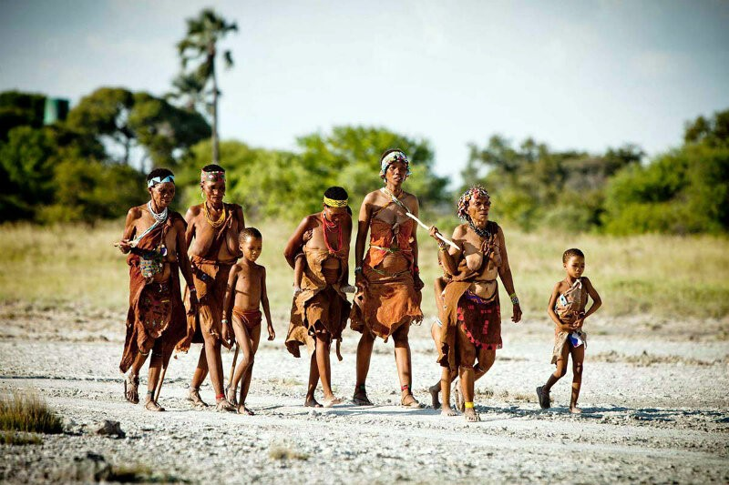

Племя "Хехе"
К началу новой эры территория Республики Танзания была заселена первобытными племенами бушменов, готтентотов, кушитов и банту. В конце первого тысячелетия н.э. интерес к этим территориям проявили арабские, индийские и персидские торговцы. Под их влиянием сложилась этническая группа, ныне известная как суахили. Недолгое время в Танзании властвовали португальцы, которые активно развивали порты и другие города страны. Но арабы и афроамериканцы вернули свое правление в стране и стали активно развивать работорговлю, в результате которой множество рабов было вывезено, и население страны резко сократилось. В этот период власть принадлежала верховным вождям племен, которые делили территорию между народами хехе, хайя, шамбала, чагга, ньямвезе.
 Племя "Бушменов"
Уже в середине 19 века на побережье прибыли многие европейцы, которые пытались установить свою власть. Немцы договорились с вождями нескольких племен о подчинении их Германии и получить прибрежную часть страны в аренду на 50 лет. Так началась колонизация Танзании. Колонизаторы развивали земледелие и торговлю, создавая плантации кофе, хлопка, сизаля и каучуконосов. Внутри страны была построена железная дорога, что стало большим этапом в становлении Танзании. История страны знает несколько восстаний против колонизаторов, а также военные действия в период первой мировой войны. После нее Танзания стала британской колонией. В 1961 году материковая часть Танзании (Танганьика) получила независимость, а в 1963 году и султанат Занзибар стал свободным. В 1964 году власти объявили о создании объединенной Республики Танзания. В ее имени присутствуют части названий исторических областей. С этого времени в Танзании активно развивается строительство социальных объектов и принята программа строения коммунизма. Это вызвало протесты со стороны населения, но все они были подавлены. Только в 1995 году были проведены демократические многопартийные выборы. Главой страны стал Президент Танзании Бенджамин Мкапа (с 23 ноября 1995 по 21 декабря 2005 год).
Племя "Бушменов"
Уже в середине 19 века на побережье прибыли многие европейцы, которые пытались установить свою власть. Немцы договорились с вождями нескольких племен о подчинении их Германии и получить прибрежную часть страны в аренду на 50 лет. Так началась колонизация Танзании. Колонизаторы развивали земледелие и торговлю, создавая плантации кофе, хлопка, сизаля и каучуконосов. Внутри страны была построена железная дорога, что стало большим этапом в становлении Танзании. История страны знает несколько восстаний против колонизаторов, а также военные действия в период первой мировой войны. После нее Танзания стала британской колонией. В 1961 году материковая часть Танзании (Танганьика) получила независимость, а в 1963 году и султанат Занзибар стал свободным. В 1964 году власти объявили о создании объединенной Республики Танзания. В ее имени присутствуют части названий исторических областей. С этого времени в Танзании активно развивается строительство социальных объектов и принята программа строения коммунизма. Это вызвало протесты со стороны населения, но все они были подавлены. Только в 1995 году были проведены демократические многопартийные выборы. Главой страны стал Президент Танзании Бенджамин Мкапа (с 23 ноября 1995 по 21 декабря 2005 год).